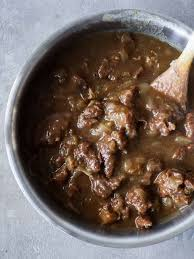

Perpetual knuckle-stew

Return to Index
Knuckle-stew is a twist on the cult-classic perpetual stew, savory, sweet, and always a surprise!
This low-maintenance dish is convenient, cost-effective, and a go-to choice for most late nights.
With only a few ingredients to get started, this dish cannot be easier to prepare...
Ingredients
- squirrel knuckle
- bone broth
- tallow
- tendons
- refrigerator leftovers
Steps
- Start by turning your stovetop burner to the maximum heat setting (11 in Europe)
- Add tendons, squirrel knuckles, bone broth, and tallow simultaneously as your stew base starts to boil
- Gradually implement refrigerator leftovers, crumbs from around the house, and coins for taste
- Salt to taste, stirring once every minute or so for the first six months, then turn heat setting down to a low simmer for the rest of eternity
- Continually add knuckles as desired to maintain the perpetual stew, and enjoy as any meal of the day!